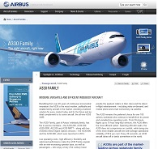

Site web d'Airbus (A330)
Pour plus d'informations sur la famille A330 d'Airbus, consultez le site officiel d'Airbus concernant la famille A330.
LES AVIONS
Pour plus d'informations sur la famille A330 d'Airbus, consultez le site officiel d'Airbus concernant la famille A330.
Retrouvez ici, tous les détails et les causes qui ont précipitées un Airbus A330 d'Air France dans l'océan Atlantique.
Retrouvez ici, la vidéo du premier vol de l'Airbus A330 effectué à l'aéroport Toulouse Blaganc.
Bénéficiant de plus de 20 ans d'innovation continue, l' A330 fait parti de la famille d'avions la plus moderne, rentable et fiable sur le marché, en fournissant une solution sur mesure pour chaque marché d'aujourd'hui, et est pour l'avenir un complément idéal aux nouveaux avions Airbus : notamment le tout-nouvel A350 XWB.
Faibles coûts d'exploitation, une grande efficacité, la flexibilité et des performances optimisées rendent la famille A330 populaire. Ainsi que les passagers jouissent d'une expérience de voyage digne du 21e siècle. En plus d'offrir plus d'espace personnel avec de larges sièges de 18 pouces pour la classe économique. Les avions de la famille A330 fournissent également les cabines les plus silencieuses de leur catégorie et le dernier système de divertissement en vol, y compris la vidéo sur demande, le téléphone mobile et la connectivité e-mail via satellite.
L'A330 reste le choix préféré pour plus de 100 compagnies aériennes à travers le monde qui continuent de bénéficier de ses faibles coûts d'exploitation incomparables. Pour des vols de 30 minutes jusqu'à des services long-courriers de 15 heures, cet appareil offre un niveau de comfort exceptionnel. L' A330 ne transige pas sur le confort, tout en étant l'un des avions les plus fiables jamais conçu, avec la fiabilité opérationnelle moyenne de 99,4 pour cent. Toutes les 20 secondes, un avion A330 décolle ou atterrit quelque part dans le monde.
| Modèle | A330-200 | A330-200 (242 tonnes) | A330-200F | A330-300 | A330-300 (242 tonnes) |
|---|---|---|---|---|---|
| Equipage Technique | 3 personnes | ||||
| Passagers | 246 (2 classes), 406 max (autorisés) | Cargo | 300 (2 classes), 440 max (autorisés) | ||
| Longueur | 58,82 m | 63,69 m | |||
| Envergure | 60,30 m | ||||
| Hauteur | 17,39 m | 16,88 m | 16,83 m | ||
| Largeur cabine | 5,28 m | ||||
| Largeur fuselage | 5,64 m | ||||
| Masse à vide | Non renseignée | ||||
| Masse maximale au décollage | 192 - 238 t | 242 t | 227 ou 233 t | 184 - 218 t (auparavant), 184 - 235 t | 242 t |
| Vitesse de croisière | Mach 0,82 (860 km/h environ : paramètre dépendant de la température) | ||||
| Vitesse maximale | Mach 0,86 (915 km/h environ : paramètre dépendant de la température) | ||||
| Distance de décollage | Non renseignée | ||||
| Autonomie | 12 600 km | 13 400 km | 7 400 km | 10 500 km | 11 300 km |
| Capacité kérosène | 139 090 L | 97 530 ou 139 090 L | 97 170 L (auparavant), 97 530 ou 97 885 L | 139 090 L | |
| Altitude maximale de croisière | Non renseignée | ||||
| A330-200 | A330-200F | A330-300 | Total | |
|---|---|---|---|---|
| Air France | 15 | - | - | 15 |
| US Airways | 15 | - | 9 | 24 |
| Qatar Airways | 16 | 6 | 13 | 35 |
| Turkish Airlines | 21 | 6 | 26 | 53 |
Pour plus d'informations sur la famille A330 d'Airbus, consultez le site wikipédia concernant la famille A330.
Retrouvez ici, un article concernant la rivalité entre Airbus et Boeing à travers l'A330.
Découvrez ici, l'A330 présidentiel comme vous ne l'avez encore jamais vu.